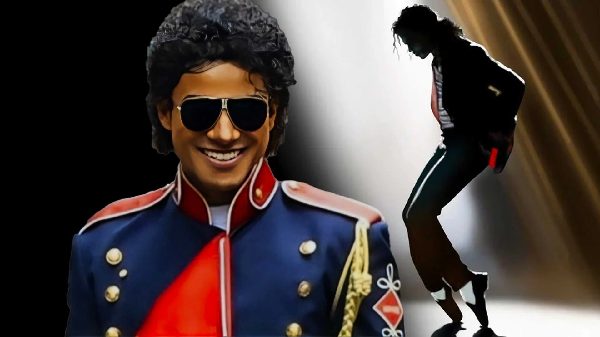
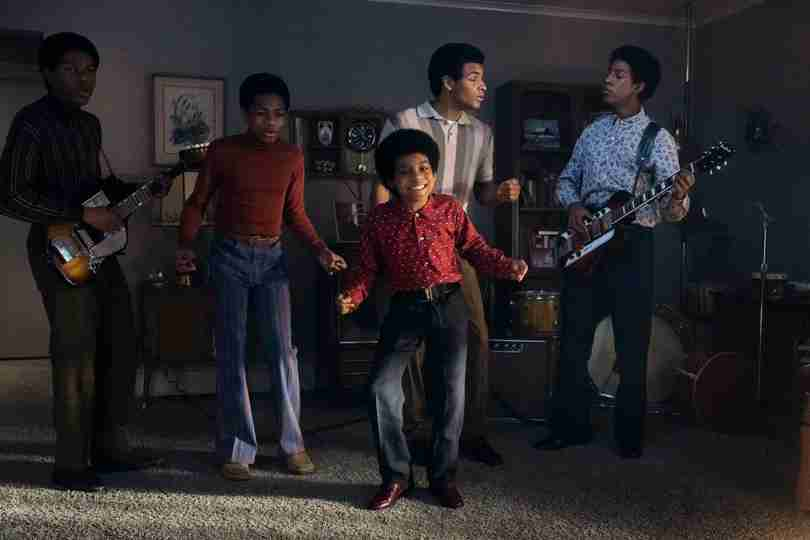
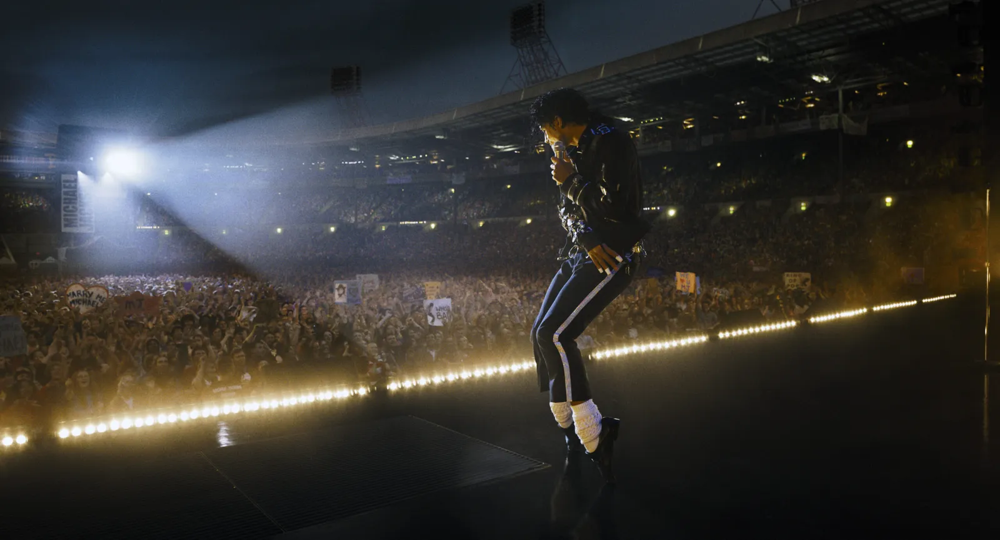

Note : 3.5/5
Brillant dans ses fulgurances, lacunaire dans ses silences. Un biopic qui assume ce qu'il est : une célébration. Pas une radiographie. Et malgré tout, ça marche.
⚠️ Attention : cette critique contient des éléments sur la vie de Michael Jackson tels que dépeints dans le film Michael.
Biopic ou hagiographie ?
La question se pose dès les premières minutes et ne nous lâche plus vraiment. Michael raconte la vie du King of Pop depuis les Jackson 5 jusqu'au seuil de sa carrière solo flamboyante, et le fait avec une générosité évidente. Trop généreuse, diront certains. La réalité derrière Michael Jackson est autrement plus complexe, plus sombre, plus ambivalente que ce que le film consent à montrer. Et le problème, c'est qu'on le sait. Tout le monde le sait. Alors oui, ce lissage narratif est un défaut réel. Mais ce serait intellectuellement malhonnête de s'arrêter là, parce que le film a des qualités qui méritent mieux que d'être noyées dans ce reproche.
Jaafar Jackson : une révélation qui n'était peut-être pas une surprise
C'est lui le cœur du film, et il tient. Jaafar Jackson, neveu de Michael, livre une performance qui dépasse largement la simple ressemblance familiale. Son physique aide, évidemment, mais ce serait réducteur de s'en tenir là. Sa voix se superpose avec une précision troublante à celle du vrai Michael Jackson, au point qu'on finit par ne plus chercher la couture. Et son jeu d'acteur, sa façon d'incarner l'enfant derrière l'icône, est d'une justesse rare. Il porte le film. Littéralement.

Les concerts : du cinéma pur
Les séquences de scène sont ce que le film fait de mieux, sans discussion. Fuqua y retrouve une énergie qu'il n'a pas toujours dans le reste du récit. On sent la salle bouger, on sent les corps réagir, en salle, c'est communicatif. Quand Michael commence à chantonner Beat It, on sait que les vingt minutes qui suivent vont être une démonstration. Et elles le sont. Ce n'est pas du fan-service : c'est du spectacle qui assume sa fonction.
L'époque Jackson 5 : la meilleure partie du film
C'est là que le film est le plus vivant. L'enfance de Michael, la dynamique de groupe, la découverte d'un talent qui déborde déjà de partout, tout ça est raconté avec une énergie et une sincérité qu'on n'a pas toujours dans la suite. Les arcs sont bien construits, chaque séquence porte quelque chose, et on s'y attache sans effort.

Le père : un personnage qui écrase tout autour de lui
Colman Domingo en Joe Jackson, c'est une présence qui écrase l'écran. Le personnage est là, constant, destructeur, et on y croit jusqu'au bout. Il n'est jamais caricaturé, il est simplement montré dans toute sa violence froide. En face, la mère est moins présente, mais le film choisit intelligemment de laisser son importance exister dans les silences et les regards. C'est plus fort que si on avait cherché à tout verbaliser.
Le syndrome de Peter Pan : traité avec intelligence
C'est une des meilleures décisions narratives du film. Ce refus de grandir qui habitait Michael n'est pas traité comme une bizarrerie ou un symptôme à analyser, il est intégré au récit de façon naturelle, presque évidente. Et derrière ça, le film dit quelque chose de vrai : Michael croyait sincèrement que sa musique pouvait réparer le monde, rassembler les gens, créer quelque chose qui ressemble à la paix. Cette conviction, aussi naïve qu'elle soit, est touchante. Et le film la défend sans ironie.
Ce qui manque : le vrai Michael
C'est le défaut qui irrite le plus longtemps après la séance. L'absence de vraies images d'archives de Michael Jackson, pas de vrais moonwalks, pas de vraies unes de journaux, pas de vraies séquences télévisées, prive le film d'une couche d'authenticité qui lui aurait beaucoup apporté. On comprend les contraintes de droits, peut-être les choix de la famille, mais ça crée un hiatus entre le récit et la réalité. Pour les séquences de clips, l'argument de la mise en scène tient, on veut voir les coulisses, voir Jaafar apprendre. Mais pour le reste, montrer le vrai Michael dans son époque aurait donné au film une chair qu'il cherche parfois sans la trouver.
Un regret : la création de Smooth Criminal
Parmi tout ce que le film choisit de ne pas montrer, c'est sans doute le manque qui laisse le plus sur sa faim. Smooth Criminal, musicalement, visuellement, dans son clip, c'est un chef-d'œuvre absolu. Voir la genèse de cette chanson, comprendre ce qui l'a fait naître, aurait été une séquence d'anthologie. Le film n'y va pas. Dommage.
La critique a tort
La réception presse de ce film est sévère, parfois à la limite du dogmatique. On reproche au biopic de ne pas être une enquête, d'éviter les zones d'ombre, de servir la légende plutôt que la vérité. Ce sont des reproches légitimes, mais ils confondent deux films différents. Michael n'a jamais prétendu être Leaving Neverland ou une réponse à celui-ci. Il raconte une partie de la vie d'un artiste hors norme, avec les choix que la famille a assumés. On peut ne pas aimer ce choix. Mais décréter que le film est mauvais pour ça, c'est lui demander d'être quelque chose qu'il n'a jamais voulu être.

Ce qu'on attend de la suite
Ce film n'est clairement qu'une première partie. Ce qui vient après, les procès, They Don't Care About Us, le vitiligo, la descente, c'est là que le récit va vraiment devoir choisir son courage. Est-ce que le projet aura la lucidité d'aborder ça sans se défausser ? C'est la vraie question. Pour l'instant, ce premier volet pose bien ses fondations. La suite dira si le film a quelque chose à dire ou s'il ne fait que célébrer.